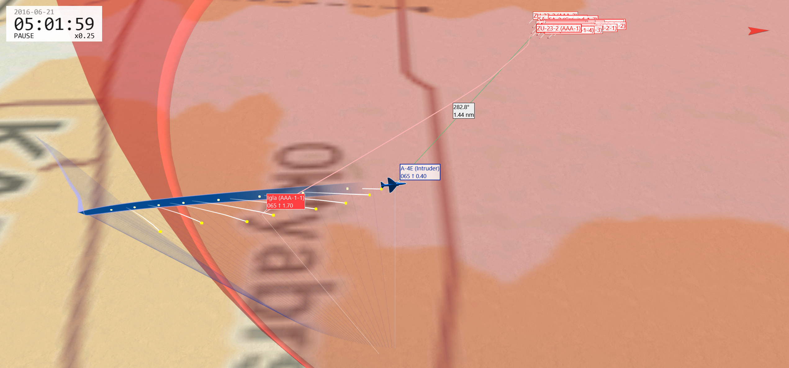

If you can take off, land, and IFF safely, you are ready to fly on Flashpoint Levant.
All missions are significantly easier with 2+ players.
The mission runs for 7 hours at a time, alternating between morning and afternoon versions. You do not lose tickets if you are in the air during a mission restart, but you will have to restart from the ground afterwards.
Mission progress and destroyed air defenses persist across mission restarts.
Your first and most important objective is to safely return to base.
If you abort your mission and safely land, your sortie was a success. If you damage your target and safely land, your sortie was a great success. If you destroy your target but are yourself destroyed, your sortie was a failure.
Your first several flights are likely to end in sudden death from air defenses or missiles you didn't realize were there. Situational awareness and survival mindset is a skill that can be learned.
Download TacView's free version and review every sortie whether successful or failed. You'll see things in TacView you never realized in the moment.
Enemy MANPADS (nicknamed "Igladude") are scattered across the map until all ground missions in an area are completed. Always assume there's an Igladude nearby that you can't see. Limit time spent at low speed at medium and low altitude.
High altitude (at least 21,000 feet) is the safest place from MANPADS, AAA and SHORAD- the higher the better. Low altitude (below 1500ft) is mostly a dangerous place to be, but can be a safe place if you can use terrain to mask from SAM radars - the lower the better, all the way down to 30ft. Medium altitude (1500-22,000ft) is the worst of both, where you can be attacked by every threat.
Add a threat table with threat ranges to your kneeboard. Compare your mission briefings and RWR to the threat table to know how far or high you can be without being shot at.
Use SRS to listen in on the radio- especially GCI (136.0 AM/255.0AM/40.0FM) and general (253.0 AM). You'll sometimes hear people ask for help, and can ask others for help. Just listening in can make you more aware.
Tune to the GCI channel (136.0 AM/255.0AM/40.0FM) to receive automatic PICTURE calls and threat monitoring. You can also request information using your voice (guide).
Use Sneaker GCI on a second monitor or tablet for even more situational awareness.
Get your eyes up out of the cockpit looking for threats. With luck you can spot the tracers from AAA or smoke trail from a SAM with enough time to defend.
Always use at least two methods of IFF before firing on a target.
Always check the F10 map before approaching or entering runways, since not all players use SRS.
When landing at airfields in potentially enemy territory, you can reduce the risk by evasively maneuvering towards the field, using an overhead break landing pattern and visually inspecting any runway damage during the overhead break.
You can call an airbase using the built-in DCS ATC system if the runway has been cratered (the ATC will tell you to divert elsewhere). Using the built-in ATC will also turn on the runway lights in IFR conditions.
Press LAlt+Left Click anywhere on the F10 map to show the coordinates of a location.
Press LAlt+Y on the F10 map to cycle the coordinate system used in the top bar.
Study the F10 map of your target before your strike. Look for key landmarks and unique features you can use to visually identify and orient on.
If you know the precise location of your target, you can get "satellite reconnaissance" by zooming in over the location on the F10 map, then pressing LCtrl + F11 (F11 Jump to free camera)
Flying straight and level is dangerous. Don't be predictable. Approach targets at an angle for better visibility before the final run in. Jink when egressing at lower altitudes.
It is safest to hit your target with one strike and leave. A reattack is more dangerous than the first attack.
Try to complete your ground attack and leave within 45 seconds.
Large targets like buildings are best attacked with large bombs such as 2000 pounders.
Buddy lasing is an effective tactic, especially in cloudy weather.
Enemy aircraft spawn at enemy controlled airfields to patrol the skies and intercept players.
Use the GCI bot (136.0 AM/255.0AM/40.0FM), Sneaker GCI or a human controller (if available) to maintain situational awareness of enemy aircraft.
Study a BVR timeline for your aircraft.
Choose fights that are even or in your favor. You are very likely to lose 1v2, and more likely to win 2v1.
Your airspeed is your health bar. Keep it high.
Start engagements at high altitudes. Your missiles fly further in thin air. Altitude can be traded for speed during the fight.
The aircraft that shoots first usually wins the fight. Start the fight by launching a medium range missile at max range, then cranking. This will force the enemy into defensive maneuvers, creating opportunities.
The AI is poor at engaging multiple targets in different sectors. When working with a wingman, separate and use different tactics to cover more airspace. You might have one wingman fly lower than the other, or flank an enemy from multiple sides, or separate your attacks in time so that the second aircraft engages just as the first aircraft skates out.
The best option in a BVR fight is often to turn around and run. You can then either reset, recommit or leave as the situation dictates.
The AI is less proficient in WVR fights at lower altitudes, especially around mountains. Maneuver kills on AI at low altitudes in mountainous areas are common.
Fast interceptor aircraft such as the MiG-21 and MiG-25 perform very poorly at low airspeeds. Bait these jets into slow turning fights to nullify their speed advantage.
Igladude is the most dangerous threat in the mission. His 3D model is tiny and blends into the terrain. Once he fires his weapon, your only chance of survival is to spot the smoke trail and release as many flares as possible within a few seconds. Igladude has no fear and no mercy.
The best defense against Igladude is to stay outside of his range. If you fly at or above 16,500ft AGL Igladude will not fire on you. He also prefers to fire on targets inside of a 2nmi radius, although the missile can reach up to 2.75nmi.
It is easier to spot the smoke trail if your wingman watches for it while you make your attack run.
Heading directly towards or away from Igladude is likely to end in death. Moving sideways relative to Igladude while releasing flares provides better opportunities to survive.
If you know Igladude's exact location, you can bait out his missiles until he runs out of ammo. Orbit him inside his threat radius and watch him like a hawk. As soon as you see the smoke trail from a missile launch, release as many flares as you can, as quickly as possible. (Each time you release a flare, DCS rolls a dice to see if the missile tracks it.) You should see the missile track one of the flares and curve behind you.
IR missiles have improved tracking of aircraft at higher throttle settings, so you can pull your throttle out of afterburner to MIL or down from MIL to IDLE to increase your chances.
Preflaring is of limited effectiveness in DCS because the effect on MANPADS targeting is not well modeled.
AAA can be dangerous to the unprepared pilot, but is easily dealt with with some simple strategies.
The easiest way to avoid AAA is to stay outside its threat range. The ZU-23 has a relatively short effective range of 1.3nmi or 6,500ft. If you fly at or above 7000ft AGL, you the ZU-23 will not fire on you.
A skilled pilot can maneuver in three dimensions and dodge the incoming fire. The gun will lead its aim, but by continuously jinking a pilot can dodge incoming fire. This takes practice, so set this up in the Mission Editor and try it out.
Many AAA systems are vulnerable from diving attacks directly above them. A pop-up attack can ingress at low altitude using terrain as cover, pop up, and dive down from directly above.
Most SAM systems include three components:
Usually, killing either the search radar or track radar will neuter the site.
The SA-2, SA-3 and SA-5 cannot engage targets at low altitudes (1500ft AGL for the SA-2 and SA-5, 700ft AGL for the SA-3). Most aircraft can fly under the radar.
The SA-6 can engage targets down to about 100ft AGL. A skilled pilot can stay under this ceiling.
The SA-8 can engage targets down to about 50ft AGL, but cannot engage targets above 22,000ft. Stay above this ceiling and attack from standoff range.
No SAM in DCS can engage an aircraft below 10m (30ft) AGL. Note that this is measured from the ground terrain texture, not from the tops of any trees or buildings. A skilled helicopter pilot can stay under this ceiling.
When a SAM site fires a missile at you, a good default option is to turn directly away from the missile and accelerate as fast as possible to outrun the missile. However, your best option may vary depending on the aircraft, situation and local terrain.
You can suppress a SAM site using AGM-88 HARMs or TALDs. Generally, a site will engage the closest missile or aircraft first. An AGM-88 alone may not reliably kill a site, since the site will turn off its radars to blind the missile. However, an AGM-88 can create a window of opportunity to destroy a site using bombs. This strategy is especially effective with two or more aircraft.
Cluster bombs can be effective at destroying most or all of a site in a single attack.
High drag bombs can be effective when combined with a low level ingress and well-chosen ripple release settings.
Taftanaz is a convenient airfield to drop off rescued pilots.
The drop-off works best from the center of the runway.
The AN/ASN-41 Navigation Computer and BDHI are useful tools for navigating to your objective. The navigation computer is accurate enough to get you within visual range of your target.
It's often more useful to carry 60 flares than the default 30/30 chaff/flare mix.
In mid to late campaign, consider ferrying a lightweight aircraft to Hatay, then arming and refueling for combat. This can be faster than carrying a heavy load all the way from Gaziantep or Akrotiri.
You usually don't need 100% fuel in the A-10. 100% fuel is roughly 3 hours of playtime, and most missions take 45 minutes to 2 hours. Launching with 60% fuel can make you more maneuverable or enable larger payloads.
The A-10's jammer pod is not useful in this campaign. It mildly reduces enemy radar guided SAM range, but A-10s typically avoid those SAMs entirely. An additional 2 AIM-9s for self-defense is a better use of the pylon.
In mid to late campaign, consider ferrying a lightweight aircraft to Hatay, then arming and refueling for combat. This can be faster than carrying a heavy load all the way from Gaziantep.
When flying BAI missions that involve searching a grid square, you can draw the grid square on the TAD using the CDU's steerpoint and FPM pages. Input the four corners of the grid as steerpoints. Then, create a second flight plan in the FPM page creating a loop of the four corners. Set this flight plan as the current flight plan and set the CDU mode to FLIGHT PLAN. The box should appear on the TAD.
You can improve the precision of unguided bombs by inputting the wind conditions in the CDU (SYS → LASTE → WND → WNDEDIT). The following table is accurate as of June 2023:
| Altitude ASL | Wind direction | Wind speed |
|---|---|---|
| 00 | 257 | 07 |
| 01 | 257 | 09 |
| 02 | 257 | 11 |
| 03 | 268 | 12 |
| 04 | 292 | 16 |
| 05 | 303 | 20 |
| 06 | 306 | 21 |
| 12 | 306 | 21 |
| 13 | 307 | 21 |
| 14 | 309 | 20 |
| 15 | 313 | 18 |
| 16 | 320 | 16 |
| 17 | 330 | 14 |
| 18 | 342 | 13 |
| 19 | 357 | 13 |
| 20 | 008 | 13 |
| 21 | 015 | 13 |
| 22 | 019 | 13 |
| 23 | 021 | 14 |
| 24 | 022 | 14 |
If taking off from the carrier, remember that the tankers are located in very convenient locations when flying to the AO. Taking up empty drop tanks and then filling up in the air can be a great way to get to altitude quickly. Try to avoid going to the recovery S-3 tanker above the carrier group unless absolutely necessary; the S-3's low capacity vs the F-14's high capacity means you can drain it quickly, leaving people with fuel emergencies in trouble.
If you're having trouble with pilot-induced oscillations (wobbling or feedback loops) when doing air-to-air refuelling, try set your wings to the BOMB SWEEP mode. While you'll need to trim a large amount of nose up to compensate for the reduced lift, this will keep the wings fixed in one position and stop the spoilers from deploying at certain speed states, giving you a more stable, easy to control platform to fly (this was a common IRL technique used by pilots new to the Tomcat while learning this same procedure!).
When arming for CAP, remember that while the Phoenix is one of the most powerful missiles on the server it was also designed to primarily target heavier bombers and straight-line cruise missiles. All of the targets here are fighter-sized, meaning your A2A budget may be better spent on Sparrows depending on how confident you are in your RIO (Jester or otherwise).
Against fighters, launched from a M0.9 Tomcat, the AIM-54A has a NEZ of 15nm. Remember that, while it has a reputation for being a long-range missile, this reputation was built around ungainly bombers and not defending fighters. Employ your weapons from sub-40nm to ensure you've got a decent kill probability.
The LANTIRN targeting pod can make the F-14 very effective at anti-shipping missions. Use your RWR to get close to surface combatants once you're in the grid square of the target, then point track the target. A GBU-10 or GBU-24 will produce a one-hit kill on any ship provided you score a direct hit. Drop your bomb flying head-on with the target from high-altitude to ensure the bomb has a high chance to hit your laser.
Many enemy fighters will go for the deck when you commit to an engagement, and the AWG-9 radar can struggle with look-down targets. Follow the target down or stay level with them to keep solid locks.
When locking up a target at range, use the TCS to identify your target and get a better idea of their aspect - knowing whether you're fighting a MiG-19 or a MiG-29 in advance can influence how you approach the engagement.
The F-14 is one of the few aircraft on FPL that can simultaneously carry a full A2G, A2A and drop-tank equipped loadout. Build your loadouts carefully to make sure you're able to handle any mission requirement.
The F-16 can overstress its wings - if you're bringing lots of ordnance/wing fuel tanks, make sure you set your stores switch the CAT III (near the parking brake switch) to allow the FCS to G limit your manoeuvres.
When performing bombing missions, pay attention to which version of bomb works best for you - if you need to make a low, fast, level approach, retarded bombs such as Snakeeyes, Ballutes and others may be better than the regular low-drag versions.
The HTS makes the F-16C the most capable SEAD platform on the server - use the unique situational awareness it gives you to protect other packages or better hunt down tasked SAM sites. Remember that you shouldn't be engaging SAM sites that aren't directly engaging you/related to your mission!
Use your jammer in the most effective mode for your mission - barrage jamming (countermeasures manual, jammer position 3) can be highly effective at denying a hard lock to radars at long range and can even help shield aircraft flying in close formation.
Don't over-rely on the Missile Warning System of the F-16 - long range SAM launches such as those from the SA-5 sites may not always be detected. Defend if you've been getting illuminated by a guidance radar for any protracted amount of time.
The F-16 shines in the rate fight rather than the one-circle. When fighting aircraft such as MiG-29s, don't be afraid to extend the circle so you can bring them into a flight regime where you have the advantage.
When setting up your loadout, keep in mind that like other lighter multirole fighters, drag can have a very noticeable adverse effect on your energy retention. Don't be afraid to remove the pylons from the 2/8 stations if you're purely looking to do self-protection on an air to ground mission or have escort/CAP cover - you may be surprised how much better the plane performs.
Remember to set the XMT ON button on the HSD MFD page - this ensures that other Link-16 equipped friendly aircraft can see you even if the AWACS can't.
The Hornet benefits from having some of the most potent stand-off ordnance on FPL, however it may not always be the best tool for the job. Pay attention to the time of day and weather before you load out! For example, Walleyes can be great at taking out strike targets in a high threat environment where you need fire-and-forget capability, but you'll need clear weather and daylight to employ them properly.
If you're flying off the carrier, you may not need two drop tanks - the KC-130 over Cyprus is conveniently located on the way to most targets on the mainland. A single tank will keep you speedy.
Don't be afraid to go lighter and only bring a few pieces of ordnance. Keeping the Hornet fast means you'll more easily be able to fight against late-game fighters like MiG-29s.
Remember that you need activate both the Link 4 and Link 16 datalinks to see datalink contacts on your radar/SA pages - press the DL button a second time on the Up-Front Controller to turn the 16 on.
Ensure you set your INS to the IFA position. Currently, there's a known bug with NAV mode which causes the INS to degrade at a rapid pace. The date of the mission file is set such that IFA will work and keep your navigational aids lined up properly.
If deploying weapons in CCIP mode, remember that you need to command AGR to ensure your pipper is accurate. Once your weapons are selected and set to CCIP mode, short press the Sensor Control Switch Fwd to set TDC priority to the HUD, indicated by an asterisk in the top-right. AGR will also show, indicating that your radar is ranging for your A2G munitions and giving you better accuracy.
Your built-in ALQ-165 Self Protection Jammer will do an excellent job breaking locks from older SAM systems such as the SA-2, SA-3 and fearsome SA-5 when at long range. Remember to set it back to RCV from XMIT when you're done jamming; when in XMIT it will engage automatically and you won't be able to use your radar for weapons employment until it turns back off.
The Hornet is the only playable airframe on the FPL server which can carry the AGM-84 Harpoon anti-shipping missile. Note that this weapon can be somewhat complex to employ and has a mind of its own if you're not very careful how you employ it, which can be a problem given the presence of both friendly and civilian vessels in the AO. Always get positive ID on ships you're engaging - bring a targeting pod or get closer to get eyes on and check your target against the mission briefing before you send your ordnance.
While not as flexible/clear as the Strike Eagle's, the Hornet's A2G radar modes are excellent at locating ships. If tasked with an anti-shipping mission, find vessels with ease by setting the radar to SEA mode. Remember to positively identify your targets before firing!
You can reduce the AI AWACS radio spam by pressing RShift + M (Receive Mode) repeatedly until communication is limited to player communications only.
Add a navigation table to your kneeboard to tell which ID numbers in the Landing Mode HUD correspond to which airfields on the Syria map.
Prefer rockets over bombs for ground attack. Bombs are difficult to deploy accurately using the MiG-29's HUD pipper.
{kind=link}
{kind=link}
{kind=link}